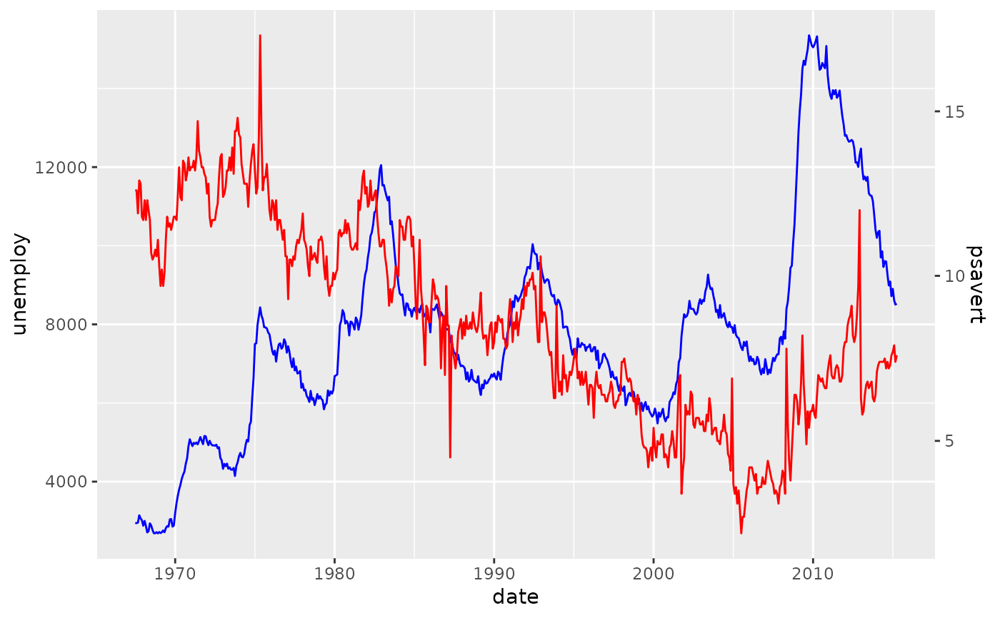
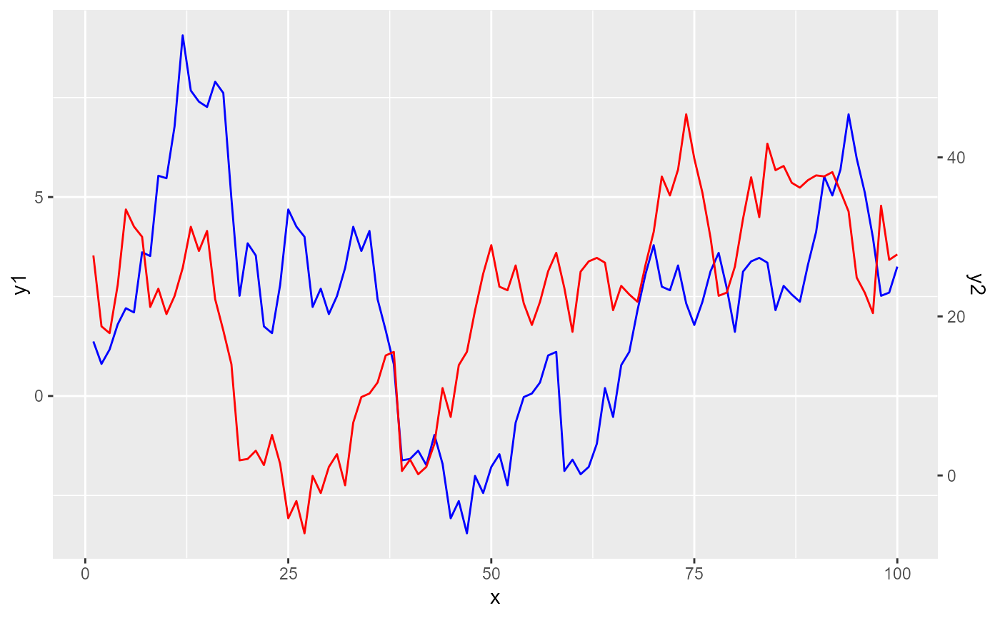

The purpose of this function is to construct a secondary axis with a projection function.
help_secondary( data = NULL, primary = c(0, 1), secondary = c(0, 1), method = c("range", "max", "fit", "ccf", "sortfit"), ... )
| data | A |
|---|---|
| primary, secondary | An expression that is evaluated in the context of
the |
| method | One of the following:
|
| ... | Arguments passed on to
|
An AxisSecondary ggproto object with a proj method for projecting
secondary data.
The intent is to run this function before starting a plot. The
output of the function is a secondary axis wherein the trans argument of
sec_axis() is populated by an appropriate transformation. In addition,
the output also contains a output$proj() function that helps transform the
secondary data.
# Run the secondary axis helper sec <- help_secondary(economics, primary = unemploy, secondary = psavert) # Making primary plot p <- ggplot(economics, aes(date)) + geom_line(aes(y = unemploy), colour = "blue") # For the secondary data, later we use the `proj` function from the helper p <- p + geom_line(aes(y = sec$proj(psavert)), colour = "red") # We feed the scale the secondary axis p + scale_y_continuous(sec.axis = sec)# Setup cross-correlated data set.seed(42) n <- 100 lag <- 20 dat <- cumsum(rnorm(n + lag)) df <- data.frame( x = seq_len(n), y1 = head(dat, n), y2 = 10 + tail(dat, n) * 5 # offset and scale y2 ) # Choosing the cross-correlation function method. sec <- help_secondary(df, y1, y2, method = "ccf") ggplot(df, aes(x)) + geom_line(aes(y = y1), colour = "blue") + geom_line(aes(y = sec$proj(y2)), colour = "red") + scale_y_continuous(sec.axis = sec)